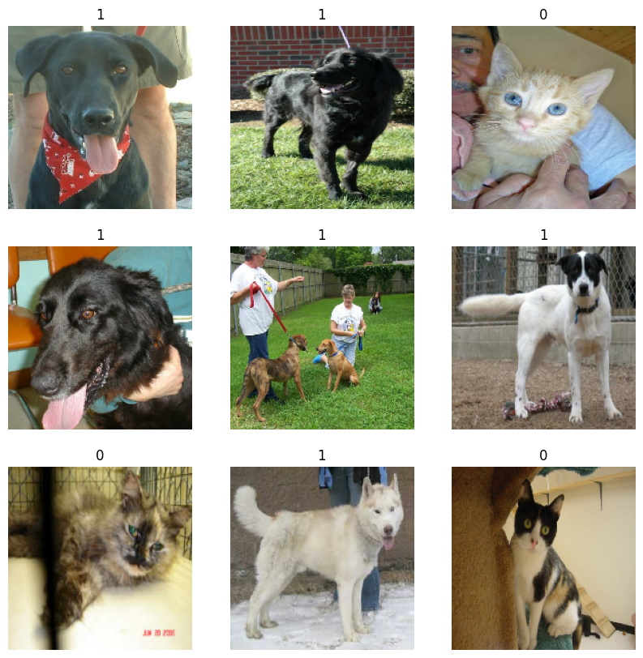
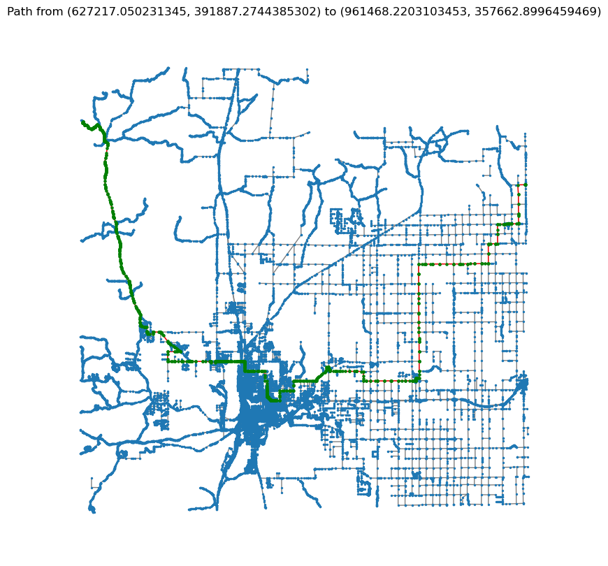

Joana Konadu Owusu
Joana Konadu OwusuProjects
Selected applications and experiments. Explore more on GitHub.

Self Driving Car Simulation
A self-driving car simulation built with a feed-forward neural network, fitness-based search, and genetic algorithms to detect collisions and learn better paths.
Visit Live Site
A Mobile App for the Visually Impaired
A mobile application that integrates computer vision and deep learning methods to support visually impaired users in real-world settings.
Visit Repo
CNN for Cat and Dog Classification
A CNN-based classification project using audio spectrogram images derived from cat and dog sounds.
Visit Repo
Optimal Path Finding for Emergency Response
Implemented AI search algorithms to estimate shortest paths for emergency flood response using Cheyenne highway maps.
Visit Repo